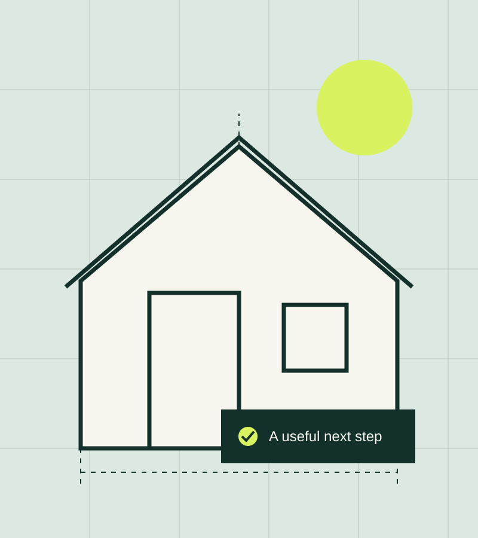

Space improvements
Small changes to layout, storage, and everyday use. Start with your priorities, then agree on a clear scope.
See the approachA clear next step.
Practical help for the places you live and work. Tell us what needs attention. We will help you understand the next step.

Find a useful starting point
Choose the closest description. This helps frame an inquiry; it does not generate a diagnosis or a quote.
All services are shown below. Each has a direct link to the next step.
Small changes to layout, storage, and everyday use. Start with your priorities, then agree on a clear scope.
See the approachDescribe what is happening and share any useful photos. An inquiry starts a conversation; it is not a remote diagnosis.
Discuss a repairMake the brief concrete before work begins. Review access, materials, sequence, and the questions still unanswered.
Plan the next stepHow we work
A visible process makes it easier to ask a good question and agree on what comes next.
See the complete processTell us what you want to change, where it is, and when you need help.
Review what is included, what needs an on-site look, and how work will be scheduled.
Know what was done, how to care for it, and whom to contact with a question.
Send a few details about your project. This sample site uses an email inquiry, with no automated quotation.